Performance comparison Classic vs. Crimson OSD with Seastore

Seastore as the native object storage in Crimson ¶
We are very excited to present the performance comparison between the Classic OSD and Seastore, the native object storage engine in Crimson OSD.
We show that Seastore performs better than the Classic OSD for 4K random reads, and has the same performance for sequential 64K read and write workloads. Only the random write 4k shows a slightly lower performance for Seastore, for which we are actively working on optimisations, in an effort lead by Samuel Just.
These results remain consistent and there is no regression in terms of the performance of Seastore with respect to the results shown from build 6aab5c07ae (May 2025, internal technical report and available in the Crimson slack channel).
In a nutshell, here are the key points about the comparison:
We used the same Ceph dev build from main branch (hash 785976e3179) for all test runs.
Single OSD, 32 RBD volumes each of size 2 GB, four FIO jobs per volume.
All configurations for Crimson used the balanced OSD algorithm on a single NUMA socket (this is to be consistent with previous tests).
We used the traditional workloads (random read 4k, random write 4k, sequential read 64k and sequential write 64k).
We used the dual reactor configuration for Seastore (using the max 56 CPU cores in the NUMA socket 0) and similarly for the Classic OSD. For details on this, please have a glance at our previous blog entry.
Seastore vs Classic OSD - max CPU cores configuration
In this section we show the performance comparison between the OSD Classic vs Crimson/Seastore for the dual reactor configuration. This consists on using the max 56 CPU cores in the NUMA socket 0 of the system used (Intel(R) Xeon(R) Platinum 8276M CPU @ 2.20GHz). This is the same CPU configuration used in the report on May 29,2025 previously published. The tests have been performed with the same hardware and software configuration, see the Appendix below for details.
Randread 4k ¶
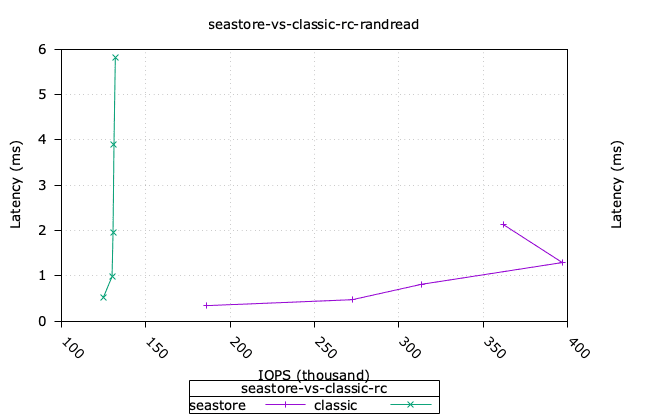
Seastore clearly shows a significant performance improvement over Classic for this workload, with a maximum throughput of 400K IOPS vs 130K IOPS, respectively.
Click to see the CPU utilisation.
| Classic | Seastore |
|---|---|
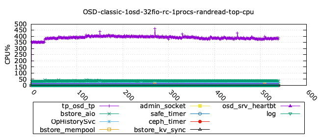 | 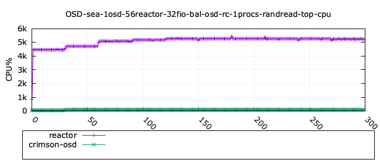 |
Note: we do not show the memory utilisation in the charts since its mostly remains constant, and does not add much to the analysis.
In the following tables we show the detailed measurements for each workload. All the column names in lower case are provided from the benchmark FIO, whereas the only two columns in Uppercase were measured using
topcommand, namely the OSD CPU and OSD memory utilisation.
Classic OSD - rand4read k - detailed stats ¶
| iodepth | iops | total_ios | clat_ms | clat_stdev | usr_cpu | sys_cpu | OSD_cpu | OSD_mem |
|---|---|---|---|---|---|---|---|---|
| 1 | 108365.87 | 32509868.00 | 0.29 | 0.11 | 1.41 | 1.26 | 353.20 | 53.66 |
| 2 | 124779.61 | 37434134.00 | 0.51 | 0.31 | 1.55 | 1.40 | 426.76 | 66.35 |
| 4 | 130072.33 | 39022090.00 | 0.98 | 0.86 | 1.59 | 1.44 | 440.62 | 66.60 |
| 8 | 130657.61 | 39197807.00 | 1.96 | 2.59 | 1.56 | 1.43 | 442.40 | 66.60 |
| 16 | 131217.62 | 39366729.00 | 3.90 | 8.30 | 1.40 | 1.36 | 437.58 | 66.60 |
| 24 | 132017.46 | 39607879.00 | 5.81 | 18.94 | 1.30 | 1.30 | 429.83 | 66.60 |
| 32 | 131567.99 | 39477765.00 | 6.81 | 27.08 | 1.37 | 1.42 | 418.12 | 66.60 |
| 40 | 134032.49 | 40220335.00 | 6.22 | 26.81 | 1.78 | 1.87 | 416.35 | 66.60 |
| 52 | 135246.36 | 40576206.00 | 5.34 | 24.46 | 2.57 | 2.71 | 414.86 | 66.60 |
| 64 | 136637.79 | 40993659.00 | 4.85 | 23.90 | 3.32 | 3.44 | 408.23 | 66.60 |
Seastore OSD - randread 4k - detailed stats ¶
| iodepth | iops | total_ios | clat_ms | clat_stdev | usr_cpu | sys_cpu | OSD_cpu | OSD_mem |
|---|---|---|---|---|---|---|---|---|
| 1 | 126108.05 | 37832541.00 | 0.25 | 0.07 | 1.75 | 1.62 | 4259.31 | 3479.04 |
| 2 | 186270.38 | 55881299.00 | 0.34 | 0.13 | 2.50 | 2.34 | 4792.02 | 3628.80 |
| 4 | 272327.60 | 81698825.00 | 0.47 | 0.20 | 3.56 | 3.18 | 5148.66 | 3628.80 |
| 8 | 313378.57 | 94014512.00 | 0.81 | 0.47 | 3.56 | 2.97 | 5258.81 | 3628.80 |
| 16 | 396901.06 | 119071509.00 | 1.29 | 0.89 | 4.36 | 3.18 | 5365.52 | 3628.80 |
| 24 | 362284.30 | 108688913.00 | 2.12 | 4.81 | 3.67 | 2.75 | 5362.52 | 3639.44 |
| 32 | 387618.69 | 116296461.00 | 2.64 | 14.40 | 4.36 | 3.23 | 5368.53 | 3645.60 |
| 40 | 346395.63 | 103929773.00 | 3.69 | 18.48 | 3.65 | 2.73 | 5354.85 | 3645.60 |
| 52 | 371220.47 | 111386558.00 | 4.48 | 33.79 | 4.24 | 3.11 | 5349.68 | 3645.60 |
| 64 | 328832.78 | 98673511.00 | 6.23 | 50.75 | 3.51 | 2.69 | 5328.60 | 3645.60 |
Randwrite 4k ¶
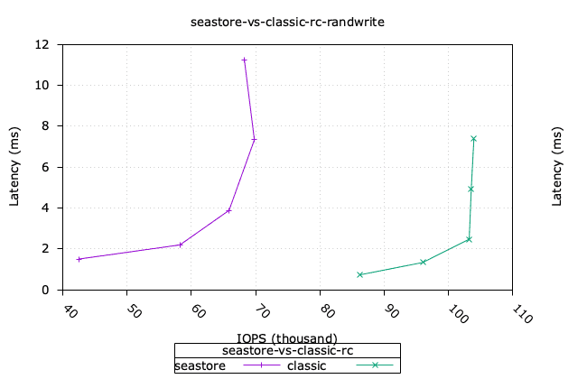
There is clear opportunity to improve the performance of Seastore for this workload. This is a very active area of work, led by Samuel Just, involving a number of optimisations for Seastore.
Click to see the CPU utilisation.
| Classic | Seastore |
|---|---|
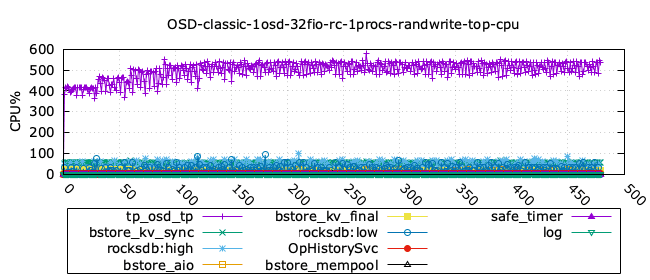 | 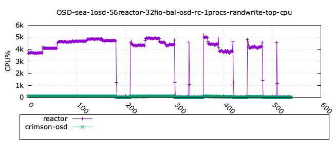 |
Classic OSD - randwrite 4k - detailed stats ¶
| iodepth | iops | total_ios | clat_ms | clat_stdev | usr_cpu | sys_cpu | OSD_cpu | OSD_mem |
|---|---|---|---|---|---|---|---|---|
| 1 | 65903.70 | 19771176.00 | 0.48 | 1.00 | 1.36 | 1.01 | 781.41 | 75.73 |
| 2 | 86286.07 | 25885995.00 | 0.73 | 0.52 | 2.03 | 1.50 | 993.70 | 57.47 |
| 4 | 96025.22 | 28807854.00 | 1.33 | 0.70 | 2.51 | 1.91 | 1094.53 | 74.25 |
| 8 | 103263.42 | 30979542.00 | 2.47 | 1.03 | 3.34 | 2.57 | 1158.53 | 76.47 |
| 16 | 103583.23 | 31075901.00 | 4.94 | 5.42 | 2.23 | 1.30 | 1158.31 | 76.22 |
| 24 | 103991.81 | 31199311.00 | 7.38 | 10.90 | 1.99 | 1.09 | 1143.36 | 75.73 |
| 32 | 104675.98 | 31405724.00 | 9.78 | 17.08 | 1.86 | 0.98 | 1145.61 | 75.73 |
| 40 | 104459.77 | 31342317.00 | 12.25 | 23.81 | 1.81 | 0.89 | 1144.96 | 76.47 |
| 52 | 104192.40 | 31264494.00 | 15.97 | 34.90 | 1.72 | 0.82 | 1142.14 | 75.97 |
| 64 | 104833.30 | 31463618.00 | 19.53 | 47.70 | 1.64 | 0.79 | 1137.10 | 76.22 |
Seastore OSD - randwrite 4k - detailed stats ¶
| iodepth | iops | total_ios | clat_ms | clat_stdev | usr_cpu | sys_cpu | OSD_cpu | OSD_mem |
|---|---|---|---|---|---|---|---|---|
| 1 | 31367.49 | 9410655.00 | 1.01 | 2.37 | 0.62 | 0.49 | 3648.14 | 3941.28 |
| 2 | 42493.17 | 12748376.00 | 1.50 | 3.97 | 0.75 | 0.59 | 4160.04 | 5390.00 |
| 4 | 58204.73 | 17461826.00 | 2.19 | 3.76 | 0.95 | 0.73 | 4680.48 | 6027.28 |
| 8 | 65861.89 | 19759489.00 | 3.88 | 5.34 | 1.06 | 0.79 | 4748.00 | 6194.16 |
| 16 | 69801.80 | 20942843.00 | 7.33 | 29.56 | 1.11 | 0.81 | 4928.67 | 6199.20 |
| 24 | 68240.35 | 20477292.00 | 11.25 | 46.16 | 1.11 | 0.79 | 4815.88 | 6199.20 |
| 32 | 71570.20 | 21477716.00 | 14.31 | 60.14 | 1.16 | 0.82 | 390.35 | 6199.20 |
| 40 | 10710.19 | 3363.00 | 354.63 | 691.85 | 0.08 | 0.07 | 4281.69 | 6199.20 |
| 52 | 16412.43 | 5810.00 | 160.41 | 334.38 | 0.25 | 0.17 | 4969.02 | 6199.20 |
| 64 | 7648.09 | 2608.00 | 394.05 | 527.43 | 0.08 | 0.16 | 4545.87 | 6199.20 |
Seqread 64k ¶
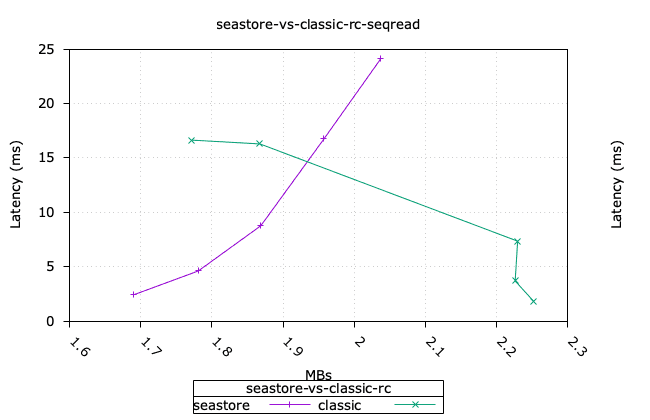
Notice that the performance of Seastore is less than 10% lower than Classic for this workload, for practical purposes they can be considered the same.
Click to see the CPU utilisation.
| Classic | Seastore |
|---|---|
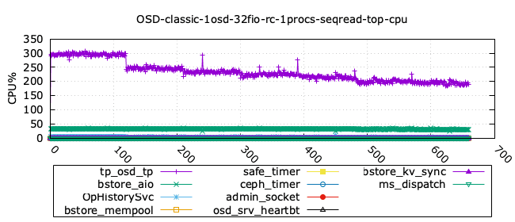 | 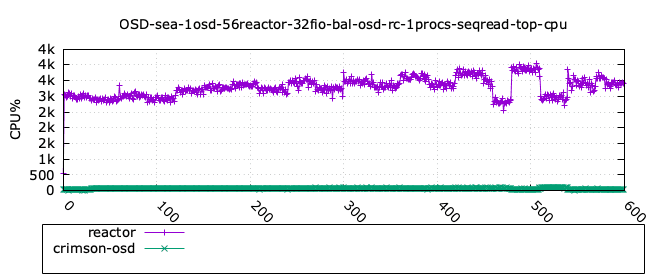 |
Classic OSD - seqread 64k - detailed stats ¶
| iodepth | bw | total_ios | clat_ms | clat_stdev | usr_cpu | sys_cpu | OSD_cpu | OSD_mem |
|---|---|---|---|---|---|---|---|---|
| 1 | 2259.54 | 10591650.00 | 0.90 | 0.45 | 0.49 | 0.44 | 244.69 | 78.03 |
| 2 | 2252.25 | 10557518.00 | 1.82 | 1.16 | 0.47 | 0.43 | 264.26 | 80.91 |
| 4 | 2226.41 | 10436444.00 | 3.68 | 2.35 | 0.46 | 0.43 | 260.60 | 79.92 |
| 8 | 2229.90 | 10453186.00 | 7.34 | 4.71 | 0.45 | 0.43 | 258.87 | 79.67 |
| 16 | 1867.48 | 8754162.00 | 16.28 | 26.08 | 0.40 | 0.40 | 226.63 | 78.19 |
| 24 | 1771.64 | 8304783.00 | 16.63 | 30.38 | 0.53 | 0.59 | 224.78 | 78.19 |
| 32 | 1686.78 | 7906337.00 | 15.32 | 24.54 | 0.72 | 0.84 | 226.87 | 78.44 |
| 40 | 1620.78 | 7597046.00 | 15.36 | 30.58 | 0.84 | 1.03 | 215.50 | 79.18 |
| 52 | 1537.75 | 7207264.00 | 15.81 | 40.05 | 0.96 | 1.27 | 213.59 | 79.18 |
| 64 | 1457.19 | 6829824.00 | 14.76 | 46.98 | 1.21 | 1.59 | 215.77 | 77.95 |
Seastore OSD - seqread 64k - detailed stats ¶
| iodepth | bw | total_ios | clat_ms | clat_stdev | usr_cpu | sys_cpu | OSD_cpu | OSD_mem |
|---|---|---|---|---|---|---|---|---|
| 1 | 1473.66 | 6907887.00 | 1.38 | 0.78 | 0.42 | 0.38 | 2849.74 | 5953.20 |
| 2 | 1690.21 | 7923018.00 | 2.42 | 1.61 | 0.44 | 0.41 | 2957.45 | 6199.20 |
| 4 | 1780.62 | 8346807.00 | 4.60 | 3.25 | 0.45 | 0.43 | 3092.81 | 6199.20 |
| 8 | 1868.70 | 8759887.00 | 8.76 | 7.66 | 0.46 | 0.43 | 2992.76 | 6199.20 |
| 16 | 1957.45 | 9176207.00 | 16.74 | 15.61 | 0.48 | 0.44 | 3235.70 | 6199.20 |
| 24 | 2037.46 | 9552208.00 | 24.12 | 26.46 | 0.47 | 0.46 | 3335.78 | 6199.20 |
| 32 | 2130.58 | 9988723.00 | 30.76 | 35.76 | 0.49 | 0.48 | 3437.99 | 6199.20 |
| 40 | 2181.19 | 10227339.00 | 37.55 | 49.96 | 0.49 | 0.48 | 3284.56 | 6199.20 |
| 52 | 2293.93 | 10757006.00 | 46.42 | 59.17 | 0.52 | 0.50 | 3502.08 | 6199.20 |
| 64 | 2241.97 | 10514348.00 | 42.65 | 61.72 | 0.63 | 0.65 | 3315.77 | 6199.20 |
Seqwrite 64k ¶
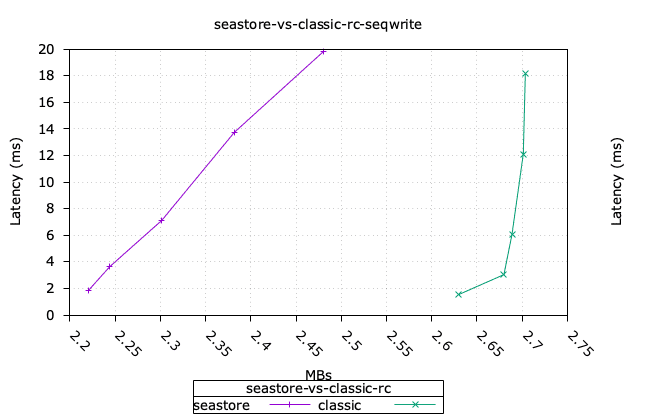
Similarly as the previous workload, the performance of Seastore is within 10% than Classic, and hence can be considered the same.
Click to see the CPU utilisation.
| Classic | Seastore |
|---|---|
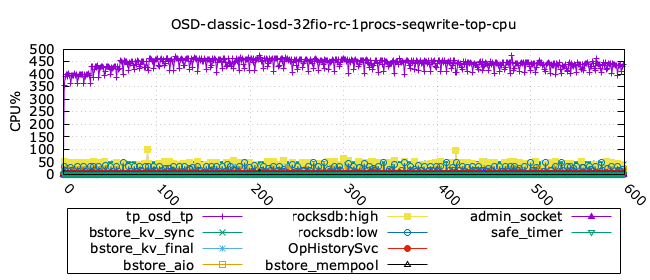 | 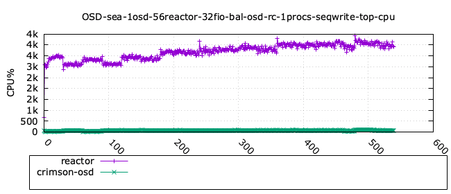 |
Classic OSD - seqwrite 64k - detailed stats ¶
| iodepth | bw | total_ios | clat_ms | clat_stdev | usr_cpu | sys_cpu | OSD_cpu | OSD_mem |
|---|---|---|---|---|---|---|---|---|
| 1 | 2413.60 | 11313833.00 | 0.83 | 0.36 | 1.90 | 0.65 | 597.74 | 40.63 |
| 2 | 2629.75 | 12326994.00 | 1.54 | 0.55 | 2.02 | 0.75 | 684.49 | 48.59 |
| 4 | 2679.76 | 12561442.00 | 3.04 | 1.28 | 1.95 | 0.69 | 698.03 | 55.99 |
| 8 | 2688.72 | 12603496.00 | 6.08 | 3.87 | 1.99 | 0.51 | 716.50 | 60.68 |
| 16 | 2701.16 | 12661982.00 | 12.11 | 15.45 | 2.33 | 0.43 | 697.26 | 61.17 |
| 24 | 2703.43 | 12673303.00 | 18.17 | 34.59 | 2.48 | 0.41 | 682.33 | 61.91 |
| 32 | 2596.58 | 12173046.00 | 24.76 | 57.19 | 2.54 | 0.41 | 679.37 | 61.91 |
| 40 | 2672.83 | 12533910.00 | 23.34 | 55.86 | 3.29 | 0.49 | 674.92 | 61.91 |
| 52 | 2607.49 | 12226048.00 | 20.86 | 47.36 | 4.62 | 0.69 | 650.55 | 62.16 |
| 64 | 2655.01 | 12446451.00 | 19.10 | 42.89 | 6.06 | 0.88 | 639.84 | 61.67 |
Seastore OSD - seqwrite 64k - detailed stats ¶
| iodepth | bw | total_ios | clat_ms | clat_stdev | usr_cpu | sys_cpu | OSD_cpu | OSD_mem |
|---|---|---|---|---|---|---|---|---|
| 1 | 1895.08 | 8883327.00 | 1.07 | 1.12 | 1.21 | 0.43 | 3177.55 | 6001.82 |
| 2 | 2220.36 | 10408096.00 | 1.83 | 1.97 | 1.29 | 0.48 | 3184.46 | 6249.60 |
| 4 | 2244.20 | 10519929.00 | 3.64 | 3.36 | 1.27 | 0.48 | 3345.72 | 6249.60 |
| 8 | 2301.54 | 10788847.00 | 7.11 | 6.38 | 1.53 | 0.49 | 3213.67 | 6249.60 |
| 16 | 2381.86 | 11165433.00 | 13.74 | 12.08 | 2.16 | 0.49 | 3493.73 | 6249.60 |
| 24 | 2479.99 | 11627449.00 | 19.80 | 20.33 | 2.43 | 0.50 | 3431.81 | 6249.60 |
| 32 | 1557.10 | 7299365.00 | 42.07 | 36.08 | 2.05 | 0.50 | 3732.99 | 6249.60 |
| 40 | 1521.37 | 7131945.00 | 53.83 | 49.44 | 2.03 | 0.48 | 3723.61 | 6249.60 |
| 52 | 1563.37 | 7328734.00 | 68.10 | 64.74 | 2.13 | 0.49 | 3810.17 | 6249.60 |
| 64 | 1571.50 | 7367144.00 | 70.18 | 71.46 | 2.52 | 0.58 | 3860.27 | 6249.60 |
Conclusions ¶
In this blog entry, we have shown the performance of Seastore OSD vs the Classic OSD. The results show that Seastore has better performance for random read 4k, and the same performance for the sequential workloads read and write 64k. Only the random write 4k shows a lower performance for Seastore, for which we are actively working on optimisations. We will continue to monitor the performance of Seastore OSD and report on any significant changes in future blog entries. We would like to thank Samuel Just for his insights on the performance of Seastore as discussed in the Crimson community meeting calls.
Appendix: configuration details ¶
The tests were executed on a single node cluster, o05, in the Sepia Lab.
The following is the summary of hardware and software configuration:
CPU: 2 x Intel(R) Xeon(R) Platinum 8276M CPU @ 2.20GH (56 cores each)
Memory: 384 GB
Storage: Drives: 8 x 93.1 TB NVMe
OS: Centos 9.0 on kernel 5.14.0-511.el9.x86_64
Kernel: 5.4.0-91-generic
Ceph: squid dev build from the main branch, hash 785976e3179 (Fri Aug 29 2025)
podman version 5.2.2
FIO: 3.28 (using the librbd engine for workloads, and the AIO engine for precondition of the NVMe drives).
We build Ceph in developer mode with the following options:
WITH_CRIMSON=true ./install-deps.sh
$ ./do_cmake.sh -DWITH_CRIMSON=ON -DCMAKE_BUILD_TYPE=RelWithDebInfo -DCMAKE_CXX_FLAGS="-fno-omit-frame-pointer" -DWITH_TESTS=OFF && ninja -C build -j 20 -l 20 -k 20 && ninja -C build install
All the tests for this report were executed using vstart.sh for cluster creation, using a single node. In terms of storage, the single configuration tested involved 32 RBD volumes, each of 2 GB size.
The RBD pool was created without replication (size 1). In the snippet below, we show the options used for the RBD pool and volumes.
Click to see the RBD configuration details.
if pgrep crimson; then
bin/ceph daemon -c /ceph/build/ceph.conf osd.0 dump_metrics > /tmp/new_cluster_dump.json
fi
# basic setup
bin/ceph osd pool create rbd 128
bin/ceph osd pool application enable rbd rbd
bin/ceph osd pool set rbd size 1 --yes-i-really-mean-it
[ -z "$NUM_RBD_IMAGES" ] && NUM_RBD_IMAGES=1
[ -z "$RBD_SIZE" ] && RBD_SIZE=2GB
for (( i=0; i<$NUM_RBD_IMAGES; i++ )); do
bin/rbd create --size ${RBD_SIZE} rbd/fio_test_${i}
rbd du fio_test_${i}
echo "Prefilling rbd/fio_test_${i}"
bin/rbd bench -p rbd --image fio_test_${i} --io-size 64K --io-threads 1\
--io-total ${RBD_SIZE} --io-pattern seq --io-type write && rbd du fio_test_${i}
done
bin/ceph status
bin/ceph osd dump | grep 'replicated size'
# Show pool’s utilization statistics:
rados df
# Turn off auto scaler for existing and new pools - stops PGs being split/merged
bin/ceph osd pool set noautoscale
# Turn off balancer to avoid moving PGs
bin/ceph balancer off
# Turn off deep scrub
bin/ceph osd set nodeep-scrub
# Turn off scrub
bin/ceph osd set noscrub
# Turn off RBD coalescing
bin/ceph config set client rbd_io_scheduler none